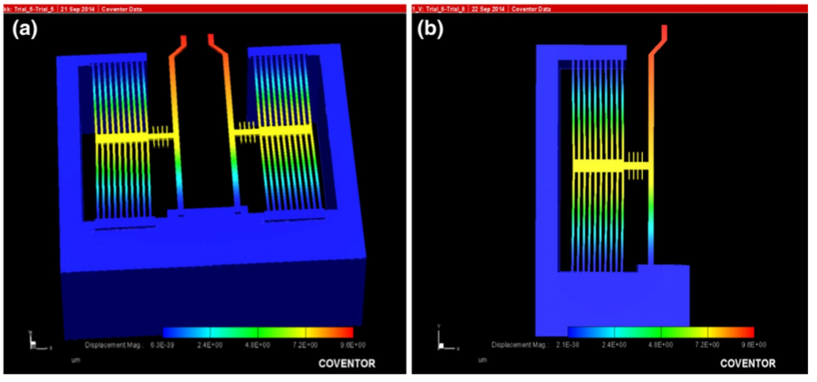

<!DOCTYPE html>
<html>
</html>
<head>
      <meta charset="utf-8">
      <meta http-equiv="X-UA-Compatible" content="IE=edge">
          <title>Creative - Bootstrap Portfolio Theme by Bootstrapious.com</title>
          <meta name="description" content="">
          <meta name="viewport" content="width=device-width, initial-scale=1">
          <meta name="robots" content="all,follow">
          <!-- Bootstrap CSS-->
          <link rel="stylesheet" href="vendor/bootstrap/css/bootstrap.min.css">
          <!-- Font Awesome CSS-->
          <link rel="stylesheet" href="vendor/font-awesome/css/font-awesome.min.css">
          <!-- Google fonts - Roboto-->
          <link rel="stylesheet" href="https://fonts.googleapis.com/css?family=Roboto:400,300,700,400italic">
          <!-- owl carousel-->
          <link rel="stylesheet" href="vendor/owl.carousel/assets/owl.carousel.css">
          <link rel="stylesheet" href="vendor/owl.carousel/assets/owl.theme.default.css">
          <!-- theme stylesheet-->
          <link rel="stylesheet" href="css/style.default.css" id="theme-stylesheet">
          <!-- Custom stylesheet - for your changes-->
          <link rel="stylesheet" href="css/custom.css">
          <!-- Favicon-->
          <link rel="shortcut icon" href="img/favicon.png">
          <!-- Tweaks for older IEs--><!--[if lt IE 9]>
            <script src="https://oss.maxcdn.com/html5shiv/3.7.3/html5shiv.min.js"></script>
            <script src="https://oss.maxcdn.com/respond/1.4.2/respond.min.js"></script><![endif]-->
</head>
<body>
  <div id="all">
    <div class="container-fluid">
      <div class="row row-offcanvas row-offcanvas-left"> 
        <!--   *** SIDEBAR ***-->
        <div id="sidebar" class="col-md-4 col-lg-3 sidebar-offcanvas">
          <div class="sidebar-content">
            <h1 class="sidebar-heading"> <a href="index.html">Creative</a></h1>
            <p class="sidebar-p">I am a creative illustrator and graphic designer with more than 10 years of experience. </p>
            <p class="sidebar-p">Originally from Toronto, currently based in London. </p>
            <ul class="sidebar-menu" >
                <!-- Link-->
                <li class="sidebar-item"><a href="creative_index.html" class="sidebar-link active">Home</a></li>
                <!-- Link-->
                <li class="sidebar-item"><a href="creative_about.html" class="sidebar-link">About</a></li>
                <!-- Link-->
                <li class="sidebar-item"><a href="creative_contact.html" class="sidebar-link">Get in touch</a></li>
            </ul>
            <p class="social"><a href="#" data-animate-hover="pulse" class="external facebook"><i class="fa fa-facebook"></i></a><a href="#" data-animate-hover="pulse" class="external gplus"><i class="fa fa-google-plus"></i></a><a href="#" data-animate-hover="pulse" class="external twitter"><i class="fa fa-twitter"></i></a><a href="#" title="" class="external instagram"><i class="fa fa-instagram"></i></a><a href="#" data-animate-hover="pulse" class="email"><i class="fa fa-envelope"></i></a></p>
            <div class="copyright text-center text-md-left">
              <p class="credit">&copy;2018 Your name or company | Template by <a href="http://bootstrapious.com/portfolio-themes" class="external">Bootstrapious.com</a></p>
              <!-- Please do not remove the backlink to us, unless you support the development at http://bootstrapious.com/donate. It is part of the license conditions. Thanks for understanding :)        -->
            </div>
          </div>
        </div>
        <!--   *** SIDEBAR END ***  -->
        <!--   *** DETAIL ***-->
        <div class="col-md-8 col-lg-9 content-column white-background">
          <div class="small-navbar d-flex d-md-none">
            <button type="button" data-toggle="offcanvas" class="btn btn-outline-primary"> <i class="fa fa-align-left mr-2"></i>Menu</button>
            <h1 class="small-navbar-heading"> <a href="index.html">Creative </a></h1>
          </div>
          <div class="row"> 
            <div class="col-xl-10">
                <div class="content-column-content">
                    <h1>MEMS Thermal Actuator</h1>
                    <p class="lead">
                        As part of the Micro-Electro-Mechanical Systems course project, I worked on a project on designing and simulating the working of one hot-arm, two hot-arm and chevron type thermal actuators.
                    </p>
                    
                    <!-- /#main-slider-->
                    <br />
                    <br />
                    <h2>Introduction</h2>
                    <h4>Description</h4>
                    <p>
                        Surface-micromachined thermal actuators use constrained thermal expansion to achieve amplified motion. Most commonly, the thermal expansion is caused by Joule heating, passing a current through thin actuator beams.
                    </p>

                    <h4>Applications</h4>
                    Applications of thermal actuators are varied:

                    <table>
                        <tr>
                            <td>
                                <p>
                                    <ul>
                                        <li>
                                            Batteryless temperature sensors
                                        </li>
                                        <li>
                                            Robotic microgrippers
                                        </li>
                                        <li>
                                            Optical scanners
                                        </li>
                                        <li>
                                            Thermally actuated RF switches.
                                        </li>
                                    </ul>

                                </p>
                            </td>
                            <td>
                                

                            </td>

                        </tr>
                    </table>

                    <h4>Advantages</h4>
                    <ul>
                        <li>The electrothermal method offers flexibility in the choice of materials, low-cost fabrication, and large displacement capabilities.</li>
                        <li>The beam deflection is directly coupled with the dissipated electrical power and, therefore, the device can be operated at standard microelectronic voltage levels</li>
                        <li>The mechanical force available is independent of the actual position of the element</li>
                        <li>The fabrication process is simple and fully compatible to standard IC production steps</li>
                        <li>The whole device is fabricated in a single wafer process, and no additional bonding or mounting techniques are necessary to create an operating device</li>

                    </ul>
                    <h2>Working Principle</h2>
                    <h4>One hot-arm actuator</h4>
                    

                    <br />
                    <br />
                    <p>
                        The U-shaped actuator converts electrical to mechanical energy through ohmic heating and the thermal expansion of polysilicon. Applying a voltage to the actuator causes more resistive heating in the narrow than in the large arm, due to the higher current density in the hot arm. As the hot-arm temperature increases the arm extends and this extension causes lateral motion of the actuator tip.
                    </p>
                    <p>
                        The hot arm is usually thinner than the cold arm, so the electrical resistance of the hot arm becomes higher than the cold arm. So, the heat generated in the hot arm is much more than that of the cold arm. Since the cold and hot arms are made of the same material and same thermal expansion coefficient, the temperature difference causes the hot arm to expand more than the cold arm. This results in the rotation of the actuator

                    </p>
                    <h4>Two hot-arm actuator</h4>
                    

                    <br />
                    <br />
                    <p>
                        It deflects because of asymmetric heating
                        of the cold and hot arms. Since the cold and hot arms are made
                        of the same material, the thinner hot arm has a relatively larger
                        electrical resistance than the cold arm. When current passes
                        through the cold and hot arms, the hot arm is resistively heated
                        to a higher temperature. Hence, the hot arm expands in length
                        more than the cold arm. The difference of the expansion
                        between the cold and hot arms causes the actuator to rotate
                        about the flexure.
                    </p>
                    <p>
                        A two-hot-arm thermal actuator  is operated by using the same strategy of the traditional horizontal thermal
                        actuator. However, in this actuator, the electric current only passes through the outer and inner hot arms. This releases
                        the requirement for the cold arm and flexure to be a part of the electric circuit. It dramatically increases the efficiency of
                        power consumption since all the power consumed in the new thermal actuator contributes to the deflection of the actuator.
                        The flexure can also be thinner than the hot arms because no current passes through the flexure. This can be used to increase
                        the actuator deflection.
                    </p>
                    <h4>Chevron type thermal actuator</h4>
                    

                    <br />
                    <br />
                    <p>
                        Chevron beam thermal actuator is basically an array of silicon beams arranged in pairs, and having a
                        predefined initial angle. When these beams are heated, they expand and tend to buckle. The actuator is
                        heated by Joule effect by passing current through the structure. The pre-bent angle (&theta;) present in the
                        beams makes the buckled beam move in the vertical direction.
                    </p>
                    <p>
                        A central beam or proof mass is attached for allowing the coupling of the beams for a uniform
                        movement and to transmit forces. The amount of movement of the proof mass depends on the angle
                        (&theta;) and the length of the beam.
                    </p>

                    <h2>My Role</h2>
                    <p>
                        My task was researching about current applications of thermal actuators and focus on the one hot-arm actuator. I designed the CAD model of one hot-arm actuator and did its simulation in COMSOL software. Also made the presentation.
                    </p>
                    <h2>Work presented</h2>
                    <p>
                        Each of the three team members presented the actuator they worked on.
                    </p>
                    <div id="main-slider" class="owl-carousel owl-theme">
                        <div class="item"></div>
                        <div class="item"></div>
                        <div class="item"></div>
                        <div class="item"></div>
                        <div class="item"></div>
                        <div class="item"></div>
                        <div class="item"></div>
                        <div class="item"></div>
                        <div class="item"></div>
                        <div class="item"></div>
                        <div class="item"></div>
                        <div class="item"></div>
                        <div class="item"></div>
                        <div class="item"></div>
                        <div class="item"></div>
                        <div class="item"></div>
                        
                    </div>


                </div>
            </div>
          </div>
        </div>
      </div>
    </div>
  </div>
  <!-- JavaScript files-->
  <script src="vendor/jquery/jquery.min.js"></script>
  <script src="vendor/popper.js/umd/popper.min.js"> </script>
  <script src="vendor/bootstrap/js/bootstrap.min.js"></script>
  <script src="vendor/jquery.cookie/jquery.cookie.js"> </script>
  <script src="vendor/owl.carousel/owl.carousel.min.js"></script>
  <script src="vendor/masonry-layout/masonry.pkgd.min.js"></script>
  <script src="js/front.js"></script>
</body>